AI는 왜 웹사이트를 쓰기 불편할까요
영상은 평범한 할 일 목록 사이트로 시작해요. 입력칸에 할 일을 쓰고 '추가'를 누르고, 체크 표시와 휴지통 아이콘으로 완료와 삭제를 해요. 사람은 보고 누르기만 하면 돼요.
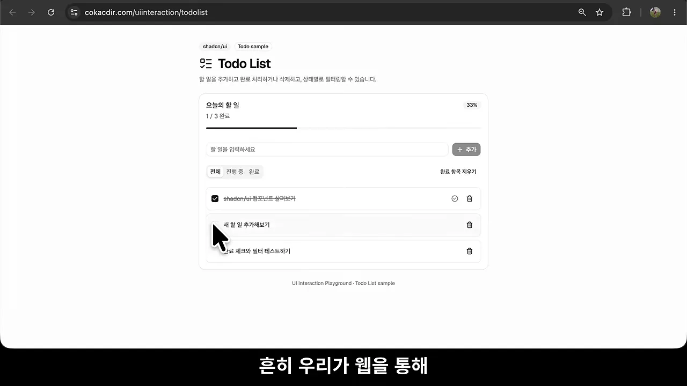
같은 기능을 명령어로만 쓸 수 있다면 어떨까요. 영상은 이 사이트를 터미널처럼 바꾼 화면을 보여 줘요. todo list, todo add "빨래하기"처럼 명령을 쳐야 목록이 나와요. 이러면 쓸 수 있는 사람이 거의 없어요. 그래서 웹은 누구나 쓸 수 있게 눈에 보이는 조작 요소로 만들어졌어요.
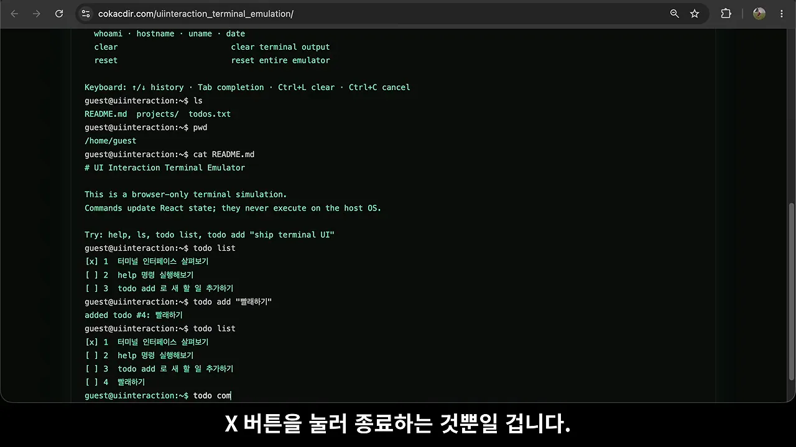
AI가 버튼을 누르는 방법
그런데 이제 웹을 쓰는 '누구나'에 AI도 들어가요. 화면이 코드로 되어 있으니 AI도 조작은 할 수 있어요. 다만 먼저 페이지 구조를 분석하고, 그 구조에 맞는 조작 코드를 스스로 만들어야 해요. 아래 오른쪽 콘솔이 그 코드예요. aria-label="새 할 일"인 입력칸을 찾아 값을 넣고, 입력 이벤트를 일으킨 뒤 폼을 제출해요. '운동하기' 하나 추가하는 데 다섯 줄이 들어요.
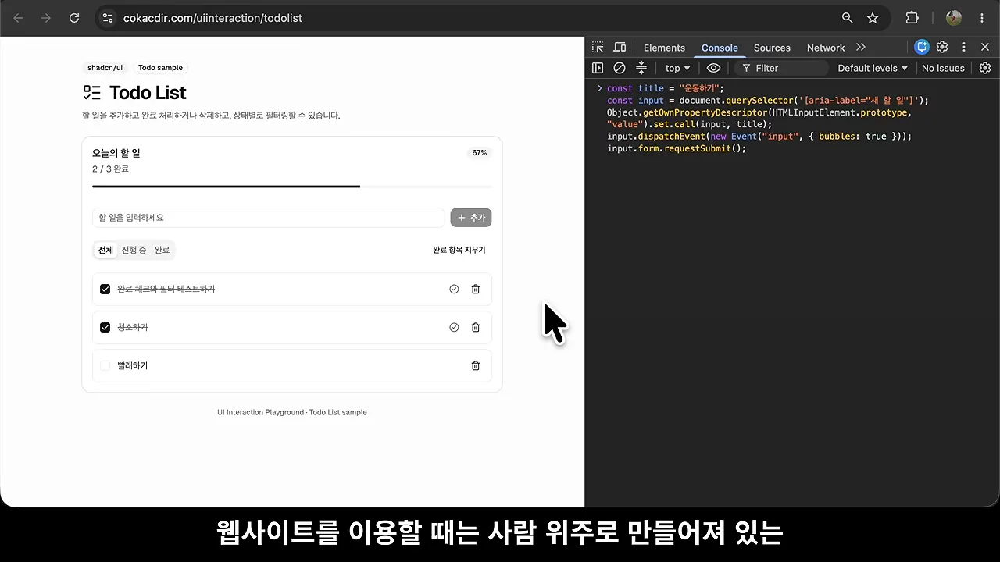
발표자가 짚는 문제는 여기서 나와요. 사이트마다 구현 모습도 복잡도도 달라서 AI가 분석을 잘못할 수 있어요. 그러면 잘못된 동작으로 이어져요. 다음 섹션의 WebMCP는 이 분석과 제작 단계를 사이트 쪽으로 넘기는 방법이에요. 두 방식을 나란히 놓으면 이렇게 달라요.
WebMCP가 하는 일, 사이트에는 득일까요
WebMCP는 사람용으로 만든 사이트에 AI도 찾아올 걸 생각해서, AI가 쓰기 쉬운 조작 도구를 코드로 미리 준비해 두는 방법이에요. AI는 사이트를 분석하거나 도구를 직접 만들 필요가 없어요. 사이트가 배려해서 만들어 둔 도구를 그대로 쓰면 돼요.
사이트에 득일까요
발표자는 여기서 한 가지 질문을 던져요. AI가 쉽게 쓰도록 편의를 봐 주는 게 사이트에 이득일까요. 아래 그림이 그 고민을 보여 줘요. 왼쪽에서는 사람이 화면을 직접 누르고, 그 옆에 동전과 오르는 그래프가 있어요. 오른쪽에서는 로봇이 케이블로 연결된 화면을 다뤄요. 가운데 사람은 턱을 괴고 고민해요.
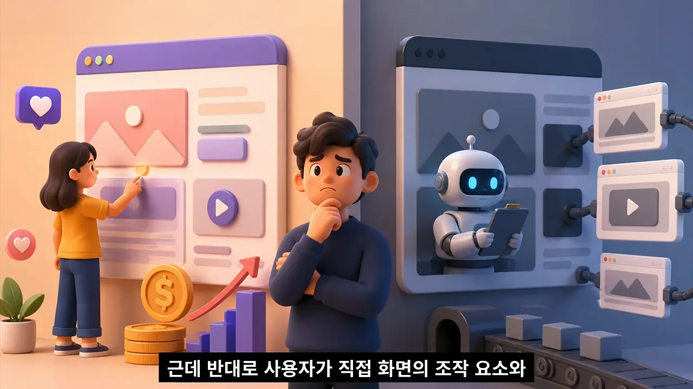
답은 서비스 성격에 따라 갈려요. 영상이 든 두 경우를 나란히 놓으면 이래요.
| 사이트 성격 | WebMCP 지원이 | 이유 |
|---|---|---|
| 상품 검색, 예약, 구매 | 반가울 수 있어요 | AI가 사용자 대신 찾고 예약하고 사는 시대에, 그 대리인을 놓치지 않는 창구가 돼요 |
| 방문과 광고 노출이 수익인 곳 | 반갑지 않을 수 있어요 | 사용자가 화면을 직접 보고 눌러야 의미가 있어요 |
바이브 코딩으로 사이트를 만드는 사람이라면, AI도 쉽게 쓰게 하고 싶을 때 WebMCP로 AI용 조작 방법을 마련해 주면 돼요. 실제 작업은 코딩 에이전트에게 부탁하면 끝나요. 그래도 어떤 원리로 되는지는 알아 두는 게 좋다며, 발표자는 바로 원리로 넘어가요.
브라우저에 새로 생긴 웹 API, modelContext
먼저 WebMCP가 브라우저 안에서 어떤 자리에 있는지부터 봐요. 발표자는 콘솔에 Image, Audio, HTMLInputElement, WebAssembly, WebSocket을 차례로 쳐서 보여 줘요. 모두 브라우저가 기본으로 들고 있는 기능이에요.
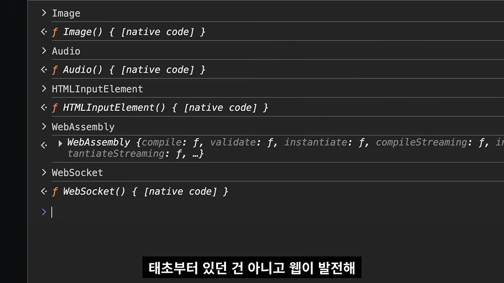
이 기능들은 웹이 처음부터 갖고 있던 게 아니에요. 필요할 때마다 하나씩 생겼어요. 예를 들어 이미지는 자료 위치와 크기를 정하는 기능을 제공해요. 같은 식으로 WebMCP를 쓰게 해 주는 ModelContext에도 AI용 도구를 등록하고 쓰게 하는 기능이 들어 있어요.
플래그를 켜야 보여요
ModelContext는 아직 기본으로 켜져 있지 않아요. 그래서 Chrome 주소창에 chrome://flags/#enable-webmcp-testing을 열고, 노란색으로 표시된 'WebMCP for testing' 항목을 Enabled로 바꾼 뒤 아래 Relaunch 버튼으로 다시 시작해요. 설명란에는 'Enables the WebMCP API'라고 적혀 있어요.
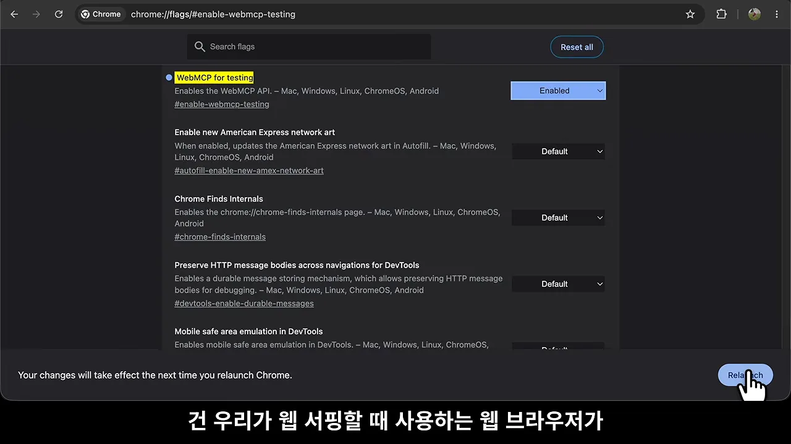
플래그를 켠 브라우저로, AI가 됐다고 생각하고 사이트에 들어가면 document.modelContext가 생겨 있어요. 오른쪽 콘솔에서 그 안을 펼쳐 보면 함수가 몇 개 없어요. executeTool, getTools, registerTool 세 개와 도구 목록이 바뀔 때 부르는 ontoolchange가 전부예요.
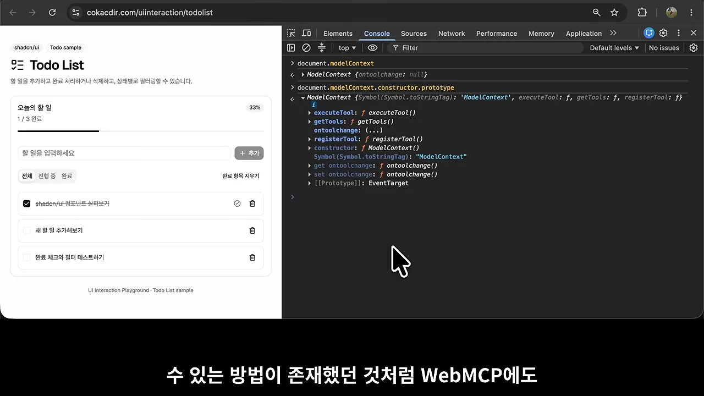
사이트는 등록하고, AI는 꺼내 써요
할 일 목록 사이트라면 AI용 도구는 목록 조회, 할 일 추가, 완료 처리, 삭제쯤이 돼요. 사이트는 이런 동작을 하는 코드를 준비해서 registerTool로 하나씩 등록해요. 아래는 삭제 도구를 등록하는 코드예요. 파란 부분이 '도구 정보', 초록 부분이 '도구 코드 본체'예요.
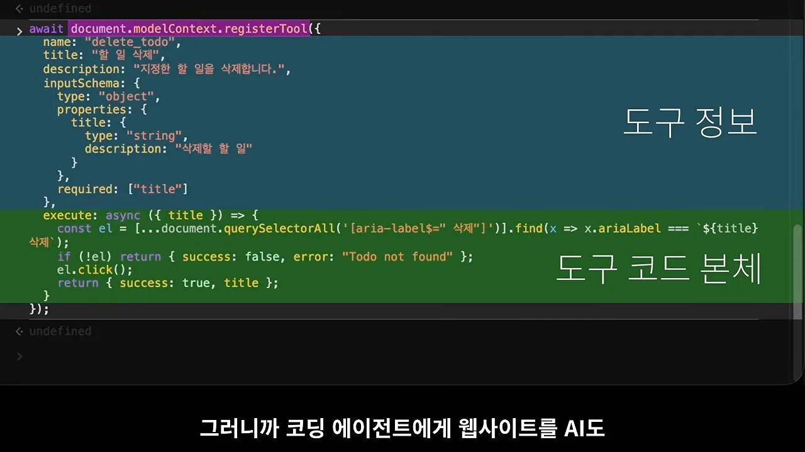
delete_todo), 설명, 받을 값의 형식(inputSchema, 여기서는 문자열 title)이 들어가요. 본체는 해당 할 일의 삭제 버튼을 찾아 눌러요.
영상 04:43에서 보기눈여겨볼 곳은 초록 부분이에요. 본체가 하는 일은 결국 첫 섹션에서 AI가 짜던 코드와 비슷해요. aria-label로 '삭제' 버튼을 찾고, 없으면 "Todo not found"를 돌려주고, 있으면 click()해요. 차이는 이 코드를 사이트가 한 번 써 두고, AI는 매번 새로 짤 필요가 없다는 점이에요. 코딩 에이전트에게 "WebMCP 지원해 줘"라고 하면 이런 등록 코드가 사이트에 들어가요.
AI는 목록부터 봐요
이제 AI 입장이에요. 사이트에 들어가면 먼저 준비된 도구가 있는지 getTools로 확인해요. 콘솔 아래쪽 표에 도구 네 개가 나와요. add_todo, complete_todo, delete_todo, list_todos이고, 각각 '새로운 할 일을 추가합니다' 같은 설명이 붙어 있어요.
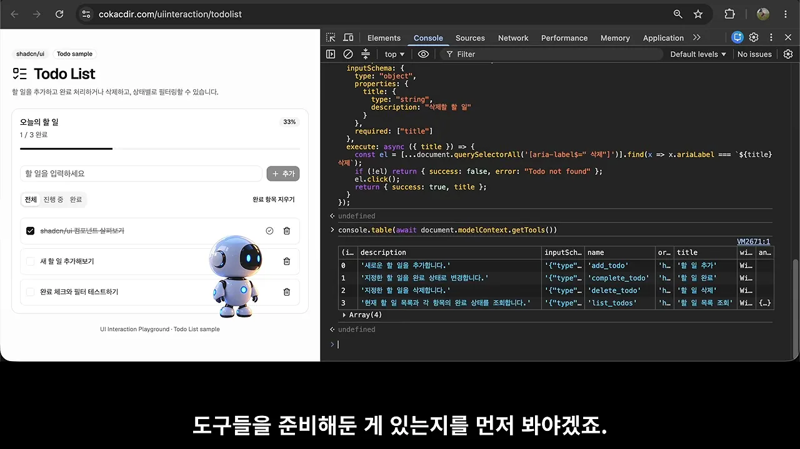
할 일 목록이 궁금하면 list_todos를 찾아 executeTool로 실행해요. 아래 콘솔 맨 위 결과가 그거예요. 할 일 세 개가 done: true/false와 함께 나와요. 그 아래로 '운동하기'를 add_todo로 추가하고, complete_todo로 완료하고, delete_todo로 지운 결과가 이어져요. 셋 다 {success: true, title: '운동하기'}를 돌려줘요.
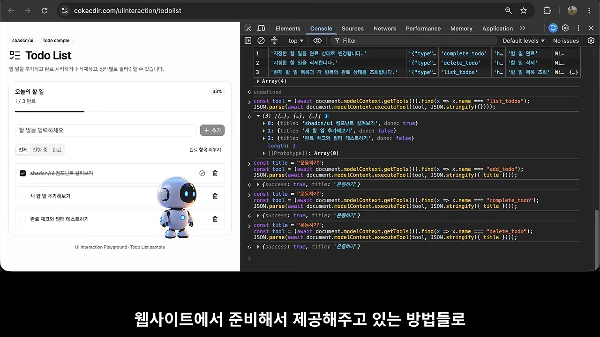
흐름을 순서대로 정리하면 이래요. 사이트가 먼저 도구를 등록해 두고, AI는 목록을 받은 뒤 필요한 도구를 골라 실행해요.
sequenceDiagram participant S as 웹사이트 participant B as modelContext participant A as AI 에이전트 S->>B: registerTool (add_todo 등 4개) A->>B: getTools B-->>A: 도구 4개와 설명, 입력 형식 A->>B: executeTool(list_todos) B->>S: 도구 코드 본체 실행 S-->>A: 할 일 3개
처음부터 등록된 사이트로 고치기
지금까지는 콘솔에서 직접 등록해 봤어요. 실제로는 접속하자마자 도구가 등록돼 있도록 사이트를 고쳐야 해요. 영상은 채팅형 AI에게 이 코드를 넣어 WebMCP를 지원하게 해 달라고 부탁해요. 답변을 보면 같은 화면을 복제한 /todolist_webmcp에만 도구 네 개를 등록하고, document.modelContext가 없는 브라우저에서는 페이지가 깨지지 않게 막겠다고 해요.
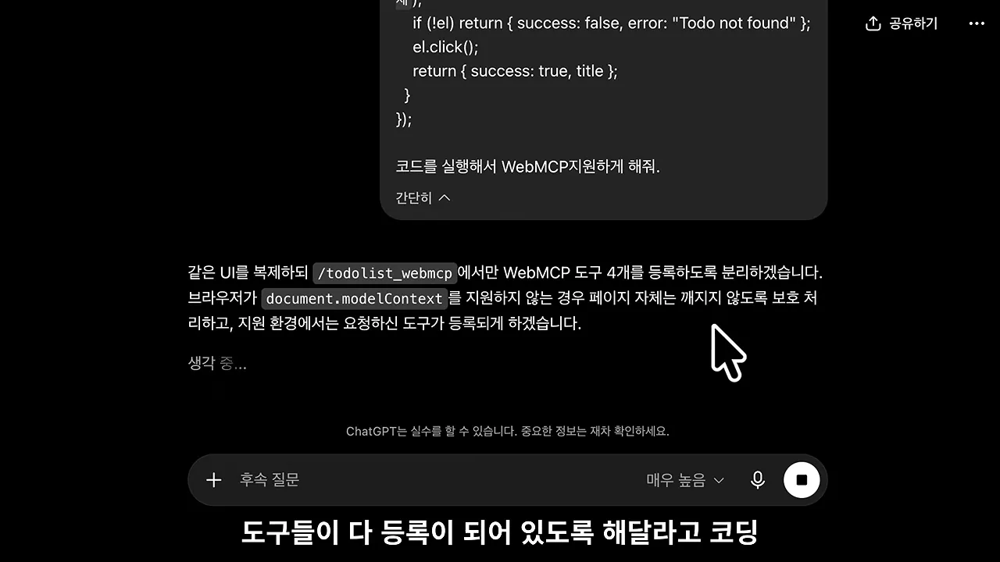
고친 페이지 주소창을 보면 todolist_webmcp예요. 이번에는 아무것도 등록하지 않고 getTools만 불렀는데, 같은 도구 네 개가 이미 표에 있어요.
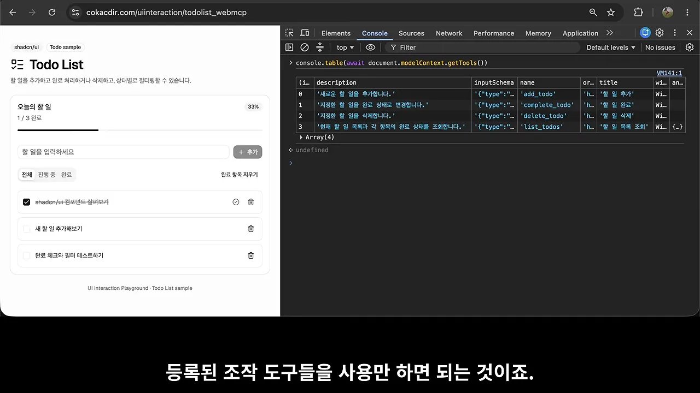
AI 쪽 모습과 프런트엔드의 미래
앞에서 콘솔로 흉내 낸 AI 쪽은 실제로 이런 프로그램이 돼요. WebMCP가 켜진 브라우저로 사이트에 들어가서 도구를 확인하고 하나씩 꺼내 써요. 아래 터미널은 'WebMCP Playwright Client'의 실행 결과예요. 1번에서 Chrome 151과 modelContext, getTools, executeTool이 모두 있는지 체크하고, 2번에서 등록된 도구 네 개를 표로 찍어요.
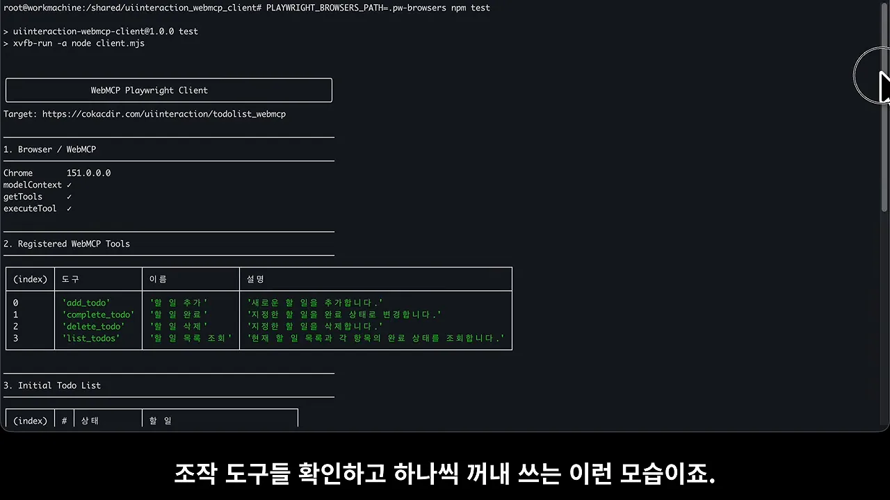
todolist_webmcp예요. 사람 없이 프로그램이 도구를 찾아 써요.
영상 06:22에서 보기프런트엔드는 필요 없어질까요
마지막은 발표자의 생각이에요. 웹을 결국 AI 에이전트만 쓰게 된다면 프런트엔드는 사실상 필요 없어지고, 백엔드가 주는 API나 MCP(Model Context Protocol)만 남을 거라고 봐요. 하지만 지금 웹이 바로 그렇게 바뀌는 건 불가능에 가깝다고 해요.
현실적인 방법으로서 AI 에이전트가 기존의 웹을 이용하되 프런트엔드 측의 코드를 통해 조작할 수 있는 방식의 인터페이스를 주입해서 준비해 두는 방법으로서 WebMCP가 제안된 것이지 않을까
— 영상 06:31
즉 WebMCP는 화면은 그대로 두고, 프런트엔드 코드에 AI용 입구를 하나 더 다는 절충안이라는 해석이에요.
스펙은 어디서 보나요
발표자는 이 API, 정확히는 Model Context API가 웹 API 문서가 모이는 MDN(Mozilla Developer Network)에는 아직 없다고 말해요. 대신 webmachinelearning GitHub 저장소에 스펙이 올라오고 있어요. 아래 화면 왼쪽 위에 'W3C Community Group Draft Report', 배경에 'UNOFFICIAL DRAFT'가 보여요. 본문은 3장 Supporting concepts로, 도구 하나가 name, title, description, input schema로 이뤄진다고 정의해요.
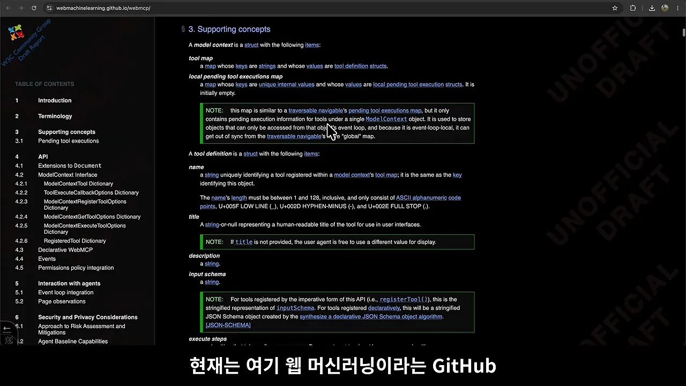